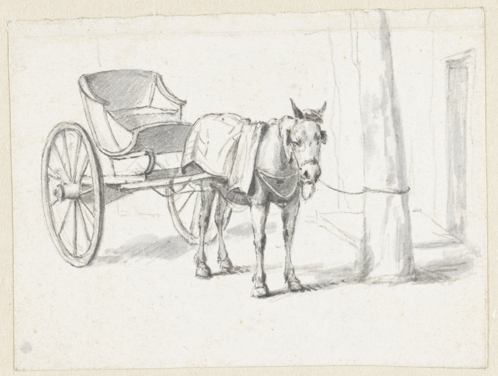

About Us
Our Story
- 
-
Ralph Manning bought the grocery store at 22nd and Como and moved his family of eight to Minneapolis in 1927 after their fishing resort in Quebec was destroyed by fire. He housed his family in the apartment upstairs, and they delivered groceries by horse cart. There was a barn for the horse and ice storage and the store even had a fountain. On June 2, 1932 Manning’s Cafe opened, after Ralph turned the grocery store into a tavern serving beer and hamburgers.
-
Around 1949 Ralph’s son, Ed, left Schafer’s Grocery in Dinkytown and took over for his father. In 1958 Manning’s added a full kitchen to the building, allowing the menu to be expanded to include fried chicken and steak. Before then kitchen had been just a grill and refrigerator behind the bar. In 1977, the kitchen was expanded again, quadrupling the size of the old one! Ed’s son, Larry now runs Manning’s.
-
For years Manning’s has been famous for great popcorn. Ed charged a penny a bowl, saying he would charge that penny until the machine was paid for… that was 4 popcorn machines ago! Manning’s pops about five tons of popcorn per year. It is rumored that many college students have lived on free popcorn and beer at Manning’s over the years.
-
In the early years Manning’s served only 3.2 beer. Strong beer and wine was added in 1987 and in 2005 a full liquor bar was added to compliment their famous draft beer… And yes, the beer lines are still cleaned every night!